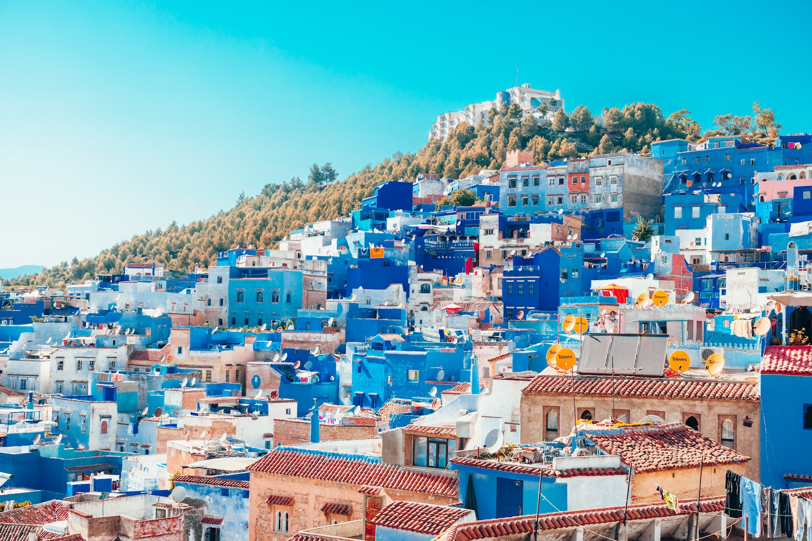

Le Maroc (en arabe : المغرب, al-Maġrib ) ou depuis 1956,
en forme longue le royaume du Maroc, autrefois appelé Empire chérifien, est un État unitaire
régionalisé situé en Afrique du Nord. Son régime politique est une monarchie constitutionnelle
semi-parlementaire unitaire et régionalisée. Sa capitale administrative et politique est Rabat
et sa plus grande ville, ainsi que sa capitale économique, est Casablanca.